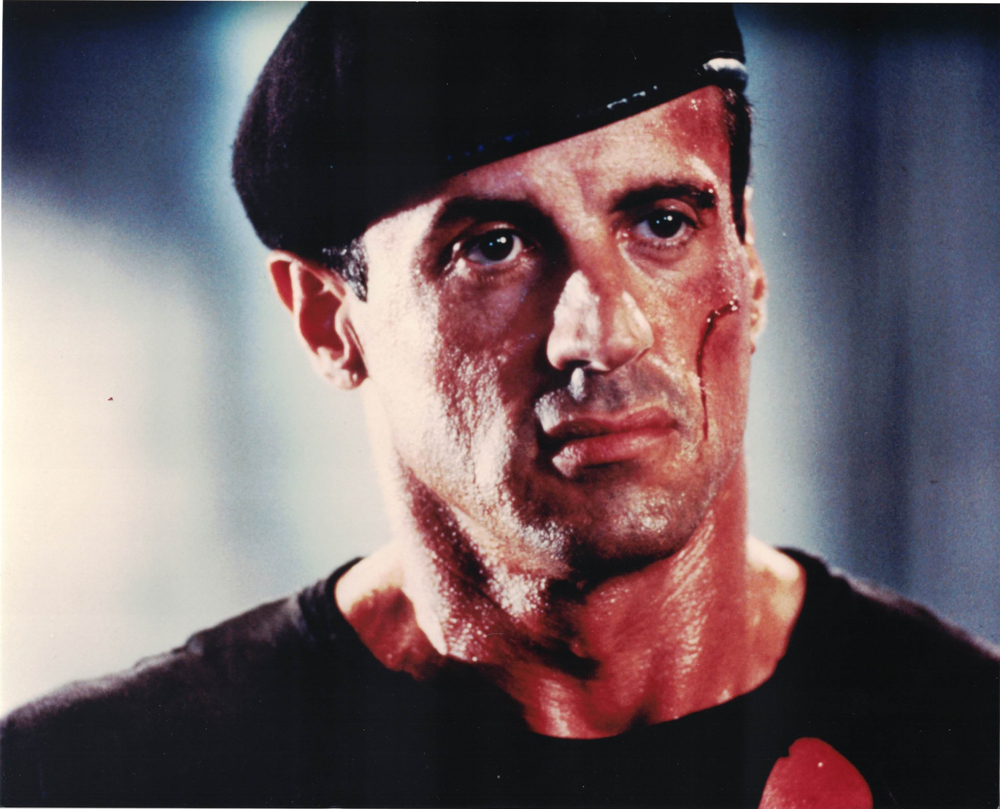

Product No. HEC-0096
$16.99
Shipping: $8.95
Description
8x10 color photograph
Full Description
Sylvester Stallone is an American actor, filmmaker, screenwriter, and producer best known for creating and portraying two of cinema's most famous action heroes, Rocky Balboa and John Rambo. Born Sylvester Gardenzio Stallone on July 6, 1946, in New York City, he struggled for years as an actor before achieving international fame. Stallone's breakthrough came with "Rocky" (1976), which he wrote and starred in as an underdog Philadelphia boxer given a chance to fight the heavyweight champion. The film became a major critical and commercial success, won the Academy Award for Best Picture, and earned Stallone Oscar nominations for both acting and screenwriting. He returned as Rocky in numerous sequels and later reprised the character in "Creed" and "Creed II." Stallone also became closely associated with Vietnam veteran John Rambo, beginning with "First Blood" (1982) and continuing through several sequels. His other notable films include "Cobra," "Tango & Cash," "Cliffhanger," "Demolition Man," "Cop Land," "The Expendables," and "Guardians of the Galaxy Vol. 2." He also created and starred in "The Expendables" franchise, bringing together many well-known action stars. With a career spanning more than five decades, Sylvester Stallone remains one of the most recognizable action stars in movie history. His association with "Rocky," "Rambo," and classic action cinema makes his photographs, autographs, and movie memorabilia especially popular with collectors.
Condition
Excellent condition